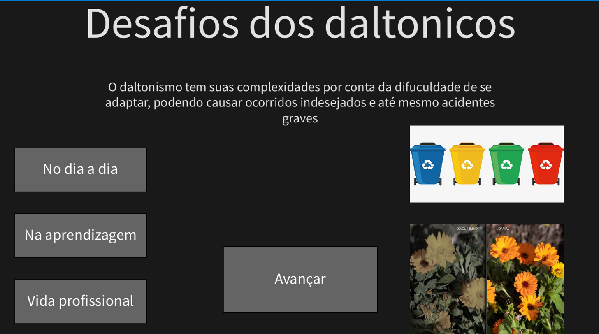
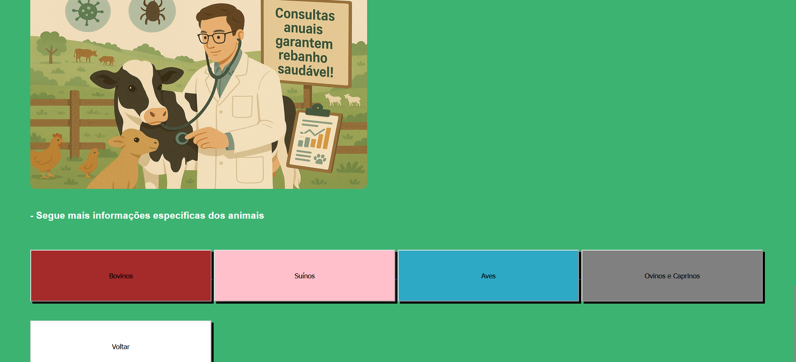

Meus Projetos
Experiência Criativa
Projeto - Jogo
- O Retorno do Rei Articos
Nesse projeto utilizamos o ambiente de desenvolvimento chamado Construct para desenvolver nosso jogo
Clique para acessar o Jogo
Projeto - Aplicativo Multi-Midia
- Teste de Daltonismo
Nesse projeto utilizamos o ambiente de desenvolvimento chamadado processing para desenvoler nosso aplicativo
Nosso objetivo é fazer um aplicativo que pudesse educar a população sobre o daltonismo e ao mesmo tempo ser um pré diagnostico.


Projeto - WebSite
- Pequeno Produtor
Nesse projeto utilizamos o VS Code como ambiente de desenvolvimento para criar nosso website usando HTML, CSS e JavaScript
Fizemos um site com o intuito de ser um auxilio aos pequenos produtores e agricultores do Brasil, onde receberão
auxilio tecnico, veterinario e promover seus nogocios através de noticias.

Raciocínio Algorítmico
- Projeto - Pedra Papel Tesoura
O objetivo deste trabalho é desenvolver, em duplas sorteadas aleatoriamente, um jogo interativo de Pedra, Papel e Tesoura utilizando Python
- Projeto - Batalha Naval
Desenvolver um jogo completo e funcional de Batalha Naval em Python, aplicando conceitos fundamentais de programação, como manipulação de matrizes bidimensionais, funções, estruturas de repetição, condicionais, validação de entrada, encapsulamento e exibição formatada no terminal